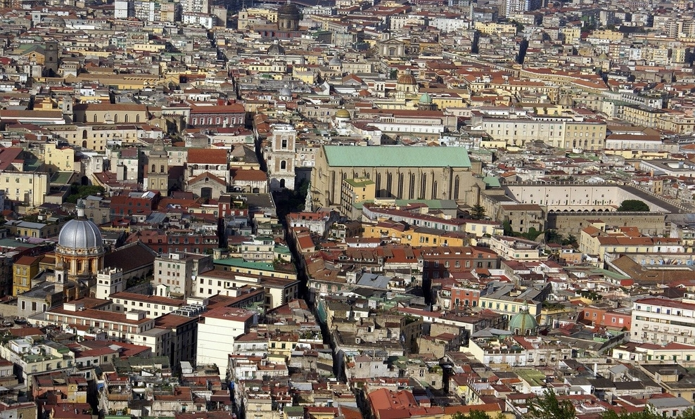
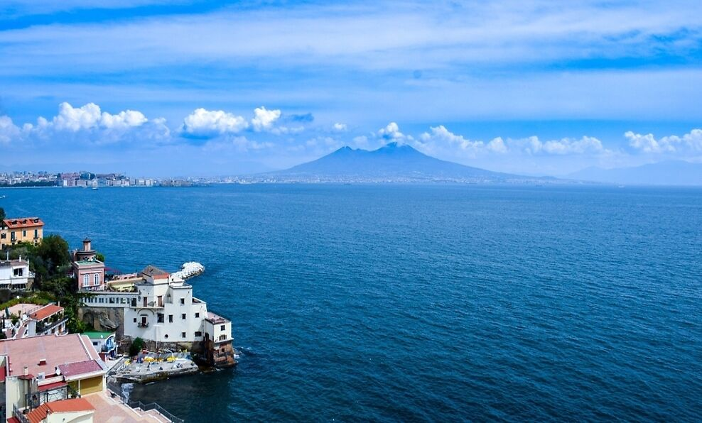
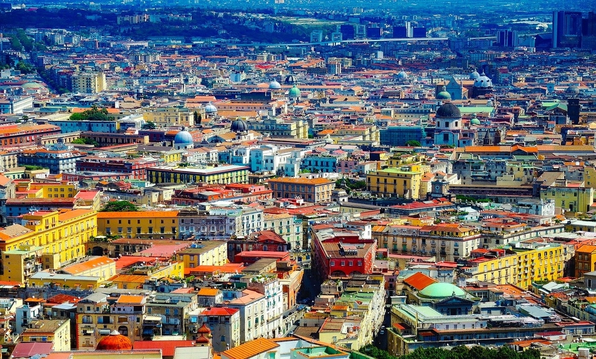
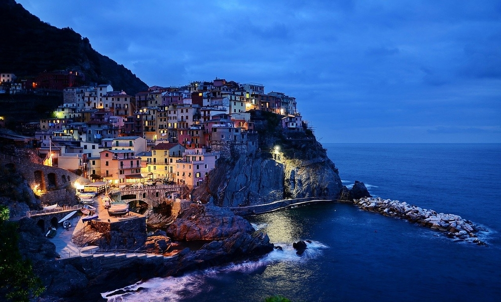
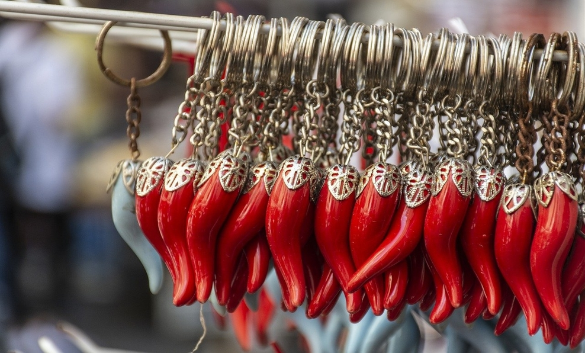

De Naples, l’histoire retient surtout son royaume, qui passa sous la tutelle du Royaume d’Espagne puis de l’empire austro-hongrois avant d’acquérir son indépendance en 1734. Capitale des plaisirs et des splendeurs, Naples était alors la troisième ville d’Europe après Paris et Londres. Mais le temps a passé sur ses trottoirs en marbre et ses palais grandioses, et Naples est aujourd’hui la terre de tous les contrastes. Ceux qui ne font pas l’effort de la connaître la disent sale et malfamée. Mais ceux qui prennent le temps de la vivre ne peuvent que tomber sous le charme de cette ville-tourbillon à la beauté baroque exceptionnelle. Bienvenue à Naples, ville grouillante prolongée d’un archipel, où la vie reste inchangée depuis plus d’un demi-siècle.
- 
- 
- 
- 
- 
Italian
3,085 milions habitants
Top 5 des choses à voir
Castel nuovo : Castel Nuovo, est un édifice historique et un des symboles de la ville de Naples. Il est connu par les Napolitains sous le nom de Maschio Angioino.
Bonnes adresses

Tandem Ragu-une adresse incontournable pour manger le fameux ragoût. Arrivez tôt parce qu’il n’y a pas beaucoup de tables. À vrai dire, nous, on n’a pas aimé plus que ça…
- Via Giovanni Paladino, 51
- 80100 Napoli
- +39 081 1900 2468

Passion Of Sofi’ pour acheter un cornet de friture (crevettes, calamars frits, petits poissons, arancini…) à déguster en marchant, comme les napolitains ! Il y en a plusieurs dans la ville.
- Via Toledo 206
- 80100 Napoli
- +39 081 1111 222

Impossible d’aller en Italie sans manger des glaces italiennes ! Voici une bonne adresse pour une pause glacée.
- Casa Infante via chiaia 189
- 80100 Naples
- +39 081 187 1247 222

da Fofo’ il paraît que leurs pâtes sont à tomber, que le patron est très sympa et que l’addition est très correcte. À ne pas manquer si vous passez dans le quartier de Vomero.
- Via Gian Lorenzo Bernini, 22/A
- 80100 Naples
- +39 081 574 222 111
Evènements
16
Oct
Walks & Wine, Un voyage à travers la culture et les ruelles de l'un des plus beaux endroits de Naples : Petraio, sur la colline de Vomero.
20
Oct
Naples propose en octobre des spectacles et des dégustations sur le thème de la pizza.
15
Nov
Cité des sciences-Vous pouvez visiter le merveilleux musée du corps humain Corporel, admirez la voûte céleste et découvrez de nombreuses curiosités grâce à Planétaire, participer à des activités, des ateliers et des événements tels que Avenir lointain et Trois jours pour l'école.
Pour plus d'informations

Ville de Naples
Office du tourisme
Guide Touristique